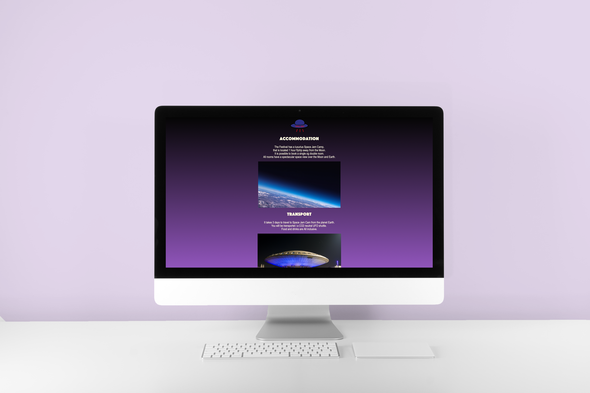

Portfolio
Space Jam

First semester group project. Our assignment was to design a concept within a theme "Space Odyssey" and create a webpage for this concept. My group and I came up with a fictive concept: SpaceJam festival in space in the future. I participated in development of the concept through brainstorming, and created one page in html and styled it in CSS and made a poster using Photoshop.
Tango Terapi


First semester group project. Our assignment was to design a concept and a website. Client was a fictive tango dance school. My group and I came up with a concept: TangoTerapi. The idea behind this concept is to help couples to put the spark back into their relationship through Tango. I was involved in brainstorming ideas for the concept, desk research, I had a role as design responsible for the project, and contributed with one web responsive html page and styled it in CSS.
How to Video

First semester group project. Our assignment was to find an idea for a video tutorial and then make the video. My group and I came up with an idea how to make a Christmas Star. I was involved in brainstorming ideas, selection of the idea for our video, development of the script and scenography, finding sound for the video, editing the video in Premiere Pro.
Abstract Drawings
I made a slide show video in After Affects showing 20 of my latest abstract drawings on paper.